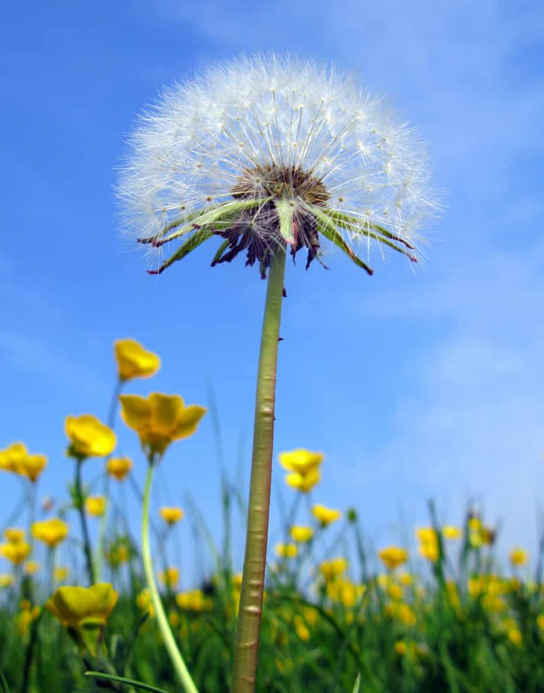

Dandel

Description
The grill glaze is one of the most scrumptious sauces you will ever taste on just about any meat. Introduced in April of 1997, this glaze has become one of Friday's best-selling items. This versatile sweet-and-slightly-spicy sauce can be ordered on salmon, baby back ribs, steak, chicken, pork chops...even on chicken wings.
Ingredients
- 1 head garlic
- 1 tablespoon olive oil
- 1⅓ cups dark brown sugar
- 1 cup pineapple juice
- ⅔ cup water
- ¼ cup teriyaki sauce
- 1 tablespoon soy sauce
- 3 tablespoons lemon juice
- 3 tablespoons minced white onion
- 1 tablespoon bourbon whiskey
- 1 tablespoon crushed pineapple
- ¼ teaspoon cayenne pepper
Steps
- Preheat oven to 325 degrees F (165 degrees C).
- Cut about 1/2-inch from the top of the garlic head. Trim the roots so the garlic sits flat. Remove some of the outer layers of papery skin from the garlic, leaving enough so that the cloves stay together. Put garlic into a small casserole dish or baking dish, drizzle olive oil over it, and cover with a lid or aluminum foil.
- Roast garlic in preheated oven until the cloves are soft, about 1 hour.
- Stir brown sugar, pineapple juice, water, teriyaki sauce, and soy sauce together in a saucepan and bring to a boil; reduce heat to low and keep at simmer.
- Squeeze sides of the garlic until the pasty roasted garlic emerges. Measure 2 teaspoons roasted garlic into the saucepan and incorporate into the sauce with a whisk. Reserve remaining roasted garlic for another use.
- Stir lemon juice, white onion, bourbon whiskey, pineapple, and cayenne pepper into the sauce; bring to a simmer and cook until the volume of the liquid reduces by half and is thick and syrup-like, 40 to 50 minutes.